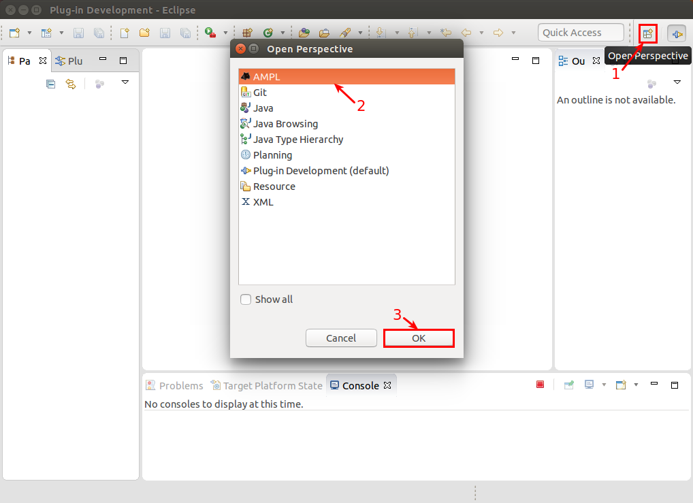
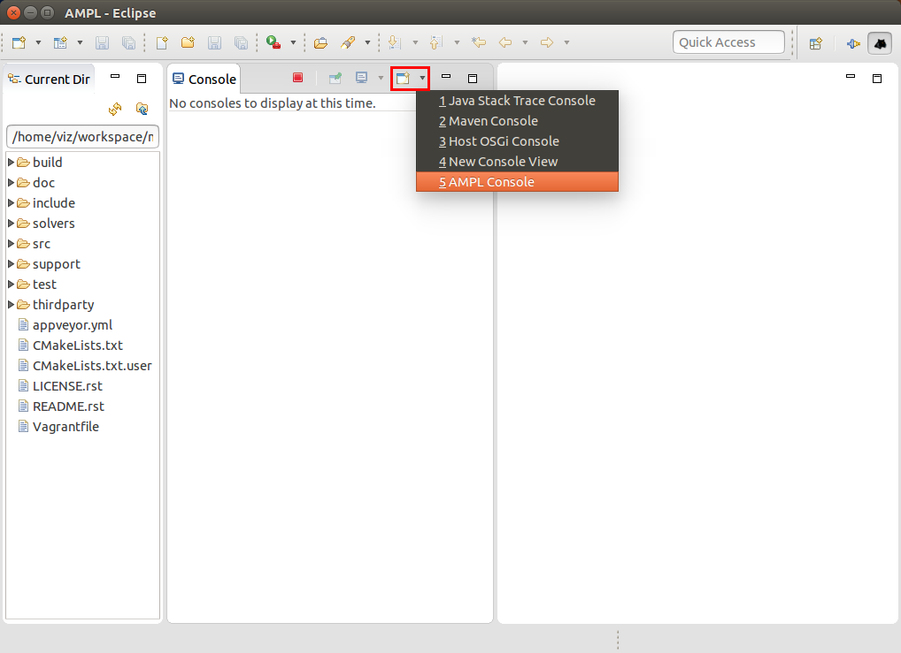
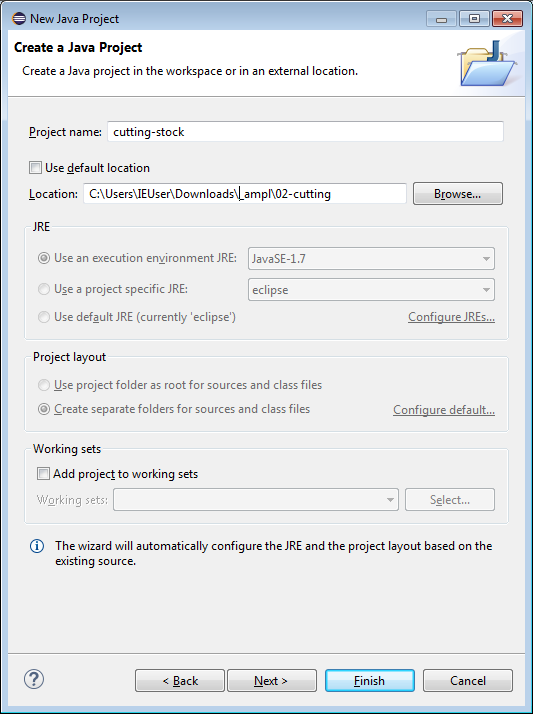
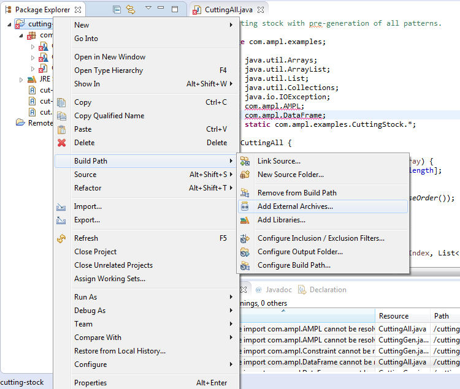
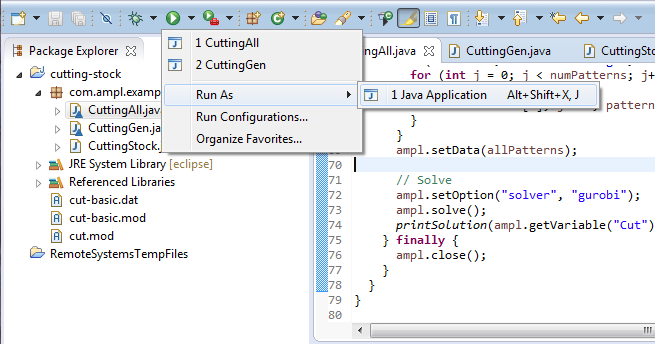

<!doctype html> <html lang="en">
<head>
  <meta charset="utf-8">

  <title>AMPL API: practical session</title>

  <meta name="author" content="Victor Zverovich">

  <meta name="apple-mobile-web-app-capable" content="yes" />
  <meta name="apple-mobile-web-app-status-bar-style" content="black-translucent" />

  <meta name="viewport" content="width=device-width, initial-scale=1.0, maximum-scale=1.0, user-scalable=no">

  <link rel="stylesheet" href="../../common/reveal.js/css/reveal.css">
  <link rel="stylesheet" href="../../common/reveal.js/css/theme/beige.css" id="theme">

  <!-- For syntax highlighting -->
  <link rel="stylesheet" href="../../common/reveal.js/lib/css/zenburn.css">

  <!-- If the query includes 'print-pdf', include the PDF print sheet -->
  <script>
    if( window.location.search.match(/print-pdf/gi) ) {
      var link = document.createElement('link');
      link.rel = 'stylesheet';
      link.type = 'text/css';
      link.href = '../../common/reveal.js/css/print/pdf.css';
      document.getElementsByTagName('head')[0].appendChild(link);
    }
  </script>

  <style>
  body {background: white;}
  comment {display: none;}

  .reveal h1 {
    padding-bottom: 50px;
  }
  
  .reveal h1,
  .reveal h2 {
    font-size: 200%;
    text-transform: none;
    text-align: center;
    margin: 0;
  }
  .reveal section:first-of-type {
    text-align: center;
  }
  .reveal section {
    text-align: left;
  }
  
  .reveal p {
    margin-top: 10px;
    margin-bottom: 10px;
  }

  .reveal .MathJax_Display {
    margin-top: 20px;
    margin-bottom: 20px;
  }
  .reveal .plot {
    box-shadow: 0 0 20px #888888;
    margin-left: auto; margin-right: auto;
  }
  
  .reveal .transp-image {
    display: block;
    margin-left: auto;
    margin-right: auto;
    border: none;
    box-shadow: none;
  }
  
  /* Fix nohighlight styles. */
  .reveal pre code { display: block; background: #3F3F3F; color: #DCDCDC; }
  
  /* Fix image styles. */
  .reveal section img { border: none; box-shadow: none; }
  
  img.float-right {
    clear:right;
    float:right;
  }

  div .new { color: red; }

  /* D3 styles */
  .node circle {
    fill: #fff;
    stroke: steelblue;
    stroke-width: 1.5px;
  }

  .node {
    font: 20px sans-serif;
  }

  .link {
    fill: none;
    stroke: #ccc;
    stroke-width: 1.5px;
  }
  
  .chart rect {
    fill: steelblue;
  }

  .chart .bar text {
    fill: white;
    font: 20px sans-serif;
    text-anchor: end;
  }
  .chart .axis text {
    font: 20px sans-serif;
    fill: black;
  }
  .chart .x.axis text {
    font: 16px sans-serif;
  }

  .chart .axis path,
  .chart .axis line {
    fill: none;
    stroke: #000;
    shape-rendering: crispEdges;
  }
  .chart .y.axis line,
  .chart .y.axis path {
    display: none;
  }
  .reveal table td { border-bottom: 0px; }
  
  .reveal pre code { max-height: 500px; }
  </style>

  <script type="text/javascript" charset="utf-8" src="MathBox.js/vendor/domready.js"></script>
  <script type="text/javascript" charset="utf-8" src="MathBox.js/build/MathBox-bundle.js"></script>

  <link href="MathBox.js/base.css" rel="stylesheet" type="text/css" media="screen">  
</head>

<body>
<script src="../../common/reveal.js/lib/js/head.min.js"></script>
<script src="../../common/reveal.js/js/reveal.js"></script>


<div class="reveal">
<!-- Any section element inside of this container is displayed as a slide -->
<div class="slides">

<section data-markdown data-separator="---">
<script type="text/template">
AMPL API: practical session
===========================

Victor Zverovich

<small><a href="mailto:viz@ampl.com">viz@ampl.com</a></small>

AMPL Optimization Inc.

<br>

<small>University of Santiago de Compostela, <br>
January 18-19, 2016, Spain</small>
---

## Outline

* Cutting stock model

* Development environment

* Using API to solve the problem with

  * Pattern enumeration
  
  * Pattern generation
    * Knapsack problem

* Comparison with MATLAB

* References

---

## Cutting stock model

AMPL formulation of the basic model (`cut-basic.mod`):

```cs
param nPatterns integer > 0;
set PATTERNS = 1..nPatterns;  # patterns
set WIDTHS;                   # finished widths

param order {WIDTHS} >= 0;    # rolls of width j ordered

param rolls {WIDTHS,PATTERNS} >= 0 default 0;
                              # rolls of width i in pattern j

var Cut {PATTERNS} integer >= 0;
                              # raw rolls to cut in each pattern

minimize TotalRawRolls: sum {p in PATTERNS} Cut[p];

subject to FinishedRollLimits {w in WIDTHS}:
   order[w] <= sum {p in PATTERNS} rolls[w,p] * Cut[p];
```

---

## Possible extensions

* Overruns
  * <div style="color:red;">Limit to percentage of amount ordered</div>
  * Limit total extra rolls

* Pattern restrictions
  * Cut at least a specified number of each pattern used
  * Limit the number of patterns used

* Costs
  * Account for setups
  * Account for complications of cutting 
  
...

---

## Extended model

Cutting stock model with overrun limit (`cut.mod`):

```cs
param nPatterns integer > 0;
set PATTERNS = 1..nPatterns;  # patterns
set WIDTHS;                   # finished widths

param order {WIDTHS} >= 0;    # rolls of width j ordered
param overrun;                # permitted overrun on any width

param rolls {WIDTHS,PATTERNS} >= 0 default 0;
                              # rolls of width i in pattern j

var Cut {PATTERNS} integer >= 0;
                              # raw rolls to cut in each pattern

minimize TotalRawRolls: sum {p in PATTERNS} Cut[p];

subject to FinishedRollLimits {w in WIDTHS}:
   order[w] <= sum {p in PATTERNS} rolls[w,p] * Cut[p]
       <= order[w] + overrun;
```

---

## API example

* Control & cutting pattern creation from a general-purpose programming language

  1. Pattern enumeration: finding all patterns

  2. Pattern generation: solving knapsack problems

* Modeling in AMPL

* Using Java, but the same can be done in other supported languages:

  * JVM-based: Scala, Clojure, ...
  * MATLAB
  * C++

---

## Development environment

* 
  Using Eclipse IDE with AMPL support

  * Popular Java IDE
  * Powerful development tools for version control, debugging, testing, etc.
  * Portable

* Modeling and development in one environment

* <div style="color:red;">Experimental</div>

* Standalone AMPL IDE is also Eclipse-based, but it is only
  for AMPL modeling

---

## Adding AMPL Support to Eclipse IDE


---

## AMPL Perspective



---

## Accessing AMPL Console



---

## Creating a new project

<div style="text-align: center">
File -> New -> Project...<br/>


</div>

---

## Creating a new project

<div style="text-align: center">
Location: .../02-cutting<br/>

</div>

---

## Adding AMPL JAR to build path

<div style="text-align: center">
Project's context menu in Project Explorer:<br/>
Build Path -> Add External Archives...<br/>

</div>

---

## Adding AMPL JAR to build path

<div style="text-align: center">
Browse to the amplapi directory and add ampl-1.1.jar<br/>

</div>

---

## Pattern enumeration

1. Read AMPL model

2. Provide input data: demands, raw widths

3. Compute all usable patterns using a recursive procedure

4. Pass data to AMPL

5. Solve problem instance

---

## Input data and solution output

`CuttingStock.java`:

```java
public class CuttingStock {
  // Problem data
  public final static int overrun = 3;
  public final static int roll_width = 6450;
  public final static int widths[] = {677, 756, 1746, 1876};
  public final static int orders[] = {10, 40, 33, 10};

  public static void printSolution(Variable cut, Parameter rolls) {
    double[] cuttingPlan = cut.getValues().getColumnAsDoubles("val");
    DataFrame patterns = rolls.getValues();
    int numPatterns = patterns.getNumRows() / widths.length;
    for (int i = 0; i < numPatterns; ++i) {
      if (cuttingPlan[i] > 0) {
        for (int j = 0; j < widths.length; j++) {
          double value = (double)patterns.getRow(widths[j], i + 1)[2];
          if (value > 0)
            System.out.format("%s %4s %s\n", i + 1, widths[j], value);
        }
      }
    }
  }
}
```

---

## Generating all patterns

```java
private static void patternGen(
  int roll_width, int[] widths, int startIndex, List<Integer> patterns)
```

* `roll_width`: remaining roll width
* `widths`: ordered widths (sorted)
* `startIndex`: index of the first width to use in the pattern
* `patterns`: output patterns concatenated into a single array

`patterns[i * widths.length + j]` gives the number of widths `j` in pattern `i`.

For example:

```
patterns:
  [0, 0, 0, 4,  <- pattern 0: 4 of width 3
   1, 3, 2, 0]  <- pattern 1: 1 of width 1, 3 of width 2, 2 of width 3
```

---

## Generating all patterns

`CuttingAll.java`:
```java
private static void patternGen(
    int roll_width, int[] widths, int startIndex,
    List<Integer> patterns) {
  if (startIndex == widths.length - 1) {
    for (int i = 0; i < widths.length - 1; i++)
      patterns.add(0);
    patterns.add(roll_width / widths[startIndex]);
  } else {
    for (int n = roll_width / widths[startIndex]; n >= 0; --n) {
      int patternIndex = patterns.size() + startIndex;
      patternGen(roll_width - n * widths[startIndex],
                 widths, startIndex + 1, patterns);
      for (; patternIndex < patterns.size();
             patternIndex += widths.length)
        patterns.set(patternIndex, n);
    }
  }
}
```

---

## Common API methods

* `AMPL.read(filename)`: read the AMPL file

* `AMPL.getParameter(name)`: get the AMPL parameter

* `AMPL.setData(dataFrame, setName)`: set data

* `Parameter.setValues(array)`: set all values from an array

* `DataFrame.setColumn(colName, array)`: set column values from an array

* `DataFrame.addRow(object...)`: add row

* `AMPL.setOption(name, value)`: set option value

* `AMPL.solve()`: solve the current problem

---

## Reading model and providing the data

```java
ampl.read("cut.mod");

// Send data to AMPL model
ampl.getParameter("overrun").setValues(overrun);
int numPatterns = patterns.size() / widths.length;
ampl.getParameter("nPatterns").setValues(numPatterns);

DataFrame widthOrder = new DataFrame(1, "WIDTHS", "order");
widthOrder.setColumn("WIDTHS", widths);
widthOrder.setColumn("order", orders);
ampl.setData(widthOrder, "WIDTHS");

DataFrame allPatterns = new DataFrame(2, "WIDTHS", "PATTERNS", "rolls");
for (int i = 0; i < widths.length; i++) {
  for (int j = 0; j < numPatterns; j++) {
    allPatterns.addRow(
      sortedWidths[i], j + 1, patterns.get(j * widths.length + i));
  }
}
ampl.setData(allPatterns);
```

---

## Solving and printing the results

```java
// Solve
ampl.setOption("solver", "gurobi");
ampl.solve();
printSolution(ampl.getVariable("Cut"), ampl.getParameter("rolls"));
```

Output:
```cs
Gurobi 6.5.0: optimal solution; objective 18
8 simplex iterations
1  756 1.0
1 1876 3.0
3  756 1.0
3 1746 1.0
3 1876 2.0
5  756 3.0
5 1876 2.0
22  756 1.0
22 1746 3.0
24  677 1.0
24  756 3.0
24 1746 2.0
```

---

## Running the application

<div style="text-align: center">
Select `CuttingAll.java`, <br/>
Run -> Run As -> Java Application<br/>

</div>

---

## Pattern generation

Generate the pattern list by a series of solves

* 
  Solve LP relaxation using subset of patterns

* Add “most promising” pattern to the subset

  * Minimize reduced cost given dual values

  * Equivalent to a knapsack problem

* Iterate as long as there are promising patterns

* Stop when minimum reduced cost is zero

  * Solve IP using all patterns found

---

## Knapsack model

```cs
param roll_width > 0;
param price {WIDTHS} default 0.0;

var Use {WIDTHS} integer >= 0;

minimize Reduced_Cost:
  1 - sum {i in WIDTHS} price[i] * Use[i];

subj to Width_Limit:
  sum {i in WIDTHS} i * Use[i] <= roll_width;
```

Can be solved without using AMPL/solvers (we'll be solving maximization problem).

---

## Building a knapsack problem

1. Relax integrality and solve.

2. Get dual values.

3. For each dual > 0, add `maxpat[i]` knapsack variables
   where `maxpat[i]` is the maximum number of widths `i` that
   fit in a pattern.

4. Build a knapsack problem with weights = widths and
   values = duals.

---

## Building a knapsack problem
   
```java
// Relax integrality and solve.
ampl.setBoolOption("relax_integrality", true);
ampl.solve();

// Get dual values to a DataFrame object
Constraint limits = ampl.getConstraint("FinishedRollLimits");
double[] dualPrices = limits.getValues().getColumnAsDoubles("dual");

int numKnapsackVars = 0;
for (int i = 0; i < widths.length; i++)
  numKnapsackVars += dualPrices[i] > 0 ? maxpat[i] : 0;

int[] weights = new int[numKnapsackVars];
double[] values = new double[numKnapsackVars];
for (int i = 0, fromIndex = 0; i < widths.length; i++) {
  if (dualPrices[i] > 0) {
    int toIndex = fromIndex + maxpat[i];
    Arrays.fill(weights, fromIndex, toIndex, widths[i]);
    Arrays.fill(values, fromIndex, toIndex, dualPrices[i]);
    fromIndex = toIndex;
  }
}
```

---

## Solving a knapsack problem

Solve a 0-1 knapsack problem using dynamic programming:

```java
private static double solve01Knapsack(
  int[] weights, double[] values, int capacity, boolean[] solution) {
  double[][] obj = new double[solution.length + 1][capacity + 1];
  boolean[][] sol = new boolean[solution.length + 1][capacity + 1];
  for (int i = 1; i <= solution.length; i++) {
    for (int c = 1; c <= capacity; c++) {
      double objWithoutItem = obj[i - 1][c];
      int weight = weights[i - 1];
      double objWithItem = weight <= c ?
        obj[i - 1][c - weight] + values[i - 1] : Integer.MIN_VALUE;
      boolean take = sol[i][c] = objWithItem > objWithoutItem;
      obj[i][c] = take ? objWithItem : objWithoutItem;
    }
  }
  for (int i = solution.length - 1, c = capacity; i >= 0; i--) {
      if (sol[i + 1][c]) {
        solution[i] = true;
        c = c - weights[i];
      } else {
        solution[i] = false;
      }
  }
  return obj[solution.length][capacity];
}
```

---

## Adding a new pattern

Add a pattern from the knapsack solution updating `nPatterns` and `rolls` parameters.

```java
int numItems = 0;
for (int i = 0; i < numKnapsackVars; i++)
  if (knapsackSol[i]) ++numItems;
int[] widthlist = new int[numItems];
for (int i = 0, j = 0; i < numKnapsackVars; i++)
  if (knapsackSol[i]) widthlist[j++] = weights[i];

Parameter nPatternsParam = ampl.getParameter("nPatterns");
nPatternsParam.set(++numPatterns);
Parameter rolls = ampl.getParameter("rolls");
for (int i = 0; i < widths.length; i++) {
  int count = 0;
  for (int j = 0; j < numItems; j++)
    if (widthlist[j] == widths[i])
      ++count;
  rolls.set(new Tuple(widths[i], numPatterns), count);
}
```

---

## Solving the IP and improving the code

Restore integrality and resolve:
```java
ampl.setBoolOption("relax_integrality", false);
ampl.solve();
printSolution(cut, rolls);
```

The following code can be moved out of the loop:

```java
ampl.setBoolOption("relax_integrality", true);
Parameter nPatternsParam = ampl.getParameter("nPatterns");
Parameter rolls = ampl.getParameter("rolls");
Constraint limits = ampl.getConstraint("FinishedRollLimits");
```

---

## Results

```cs
Gurobi 6.5.0: optimal solution; objective 20.44444444
Gurobi 6.5.0: optimal solution; objective 18.79166667
Gurobi 6.5.0: optimal solution; objective 18.375
5 simplex iterations
Gurobi 6.5.0: optimal solution; objective 17.95833333
5 simplex iterations
Gurobi 6.5.0: optimal solution; objective 17.94117647
5 simplex iterations
Gurobi 6.5.0: optimal solution; objective 19
3 simplex iterations
4 1876 3.0
5  677 1.0
5  756 3.0
5 1746 2.0
6  756 1.0
6 1746 3.0
8  756 6.0
8 1746 1.0
```

---

## Cutting stock problem in MATLAB

```matlab
function cuttingAll(dataFile)
% Cutting stock with pre-generation of all patterns

% Get data from .mat file: roll_width, overrun, widths, orders
load(dataFile);

% Generate pattern matrix
[widthsDec,ind] = sort(widths,'descend');
patmat = patternGen(roll_width,widthsDec);
patmat(:,ind) = patmat;

% Initialize and load cutting-stock model from file
ampl = AMPL();
ampl.read('cut.mod');

% Send data to AMPL model
ampl.getParameter('overrun').setValues(overrun);
ampl.getParameter('nPatterns').setValues(length(patmat));

WidthOrder = DataFrame(1, 'WIDTHS', 'order');
WidthOrder.setColumn('WIDTHS', num2cell(widths));
WidthOrder.setColumn('order', orders);
ampl.setData(WidthOrder, true);

AllPatterns = DataFrame(2, 'WIDTHS', 'PATTERNS', 'rolls');
AllPatterns.setMatrix(patmat', num2cell(widths), num2cell(1:length(patmat)));
ampl.setData(AllPatterns, false)

% Solve
ampl.setOption('solver' ,'gurobi');
ampl.solve

% Retrieve solution
CuttingPlan = ampl.getVariable('Cut').getValues();
cutvec = CuttingPlan.getColumnAsDoubles('val');

cuttingPlot (roll_width,widths,patmat(cutvec>0,:),cutvec(cutvec>0))
```

---

## Comparison with MATLAB

* 0-1 knapsack solver is already available
* Visualization capabilities


---

## References

* Robert Fourer, Victor Zverovich.
  [Building AMPL Models into Your Applications](http://ampl.com/MEETINGS/TALKS/2015_04_Huntington_Beach_T10.pdf),
  INFORMS Conference on Business Analytics and Operations Research,
  Huntington Beach, CA — 12-14 April 2015.

* AMPL API: http://ampl.com/products/api/

* KP01, a solver for 0-1 knapsack problem using preprocessing and dynamic programming:
  http://www.mathworks.com/matlabcentral/fileexchange/27238-kp01

* Cutting stock problem using AMPL API:
  https://github.com/ampl/ampl.github.io/tree/master/models/cutting-stock-java
</script>
</section>

</div>
</div>

<script>
  // Full list of configuration options available here:
  // https://github.com/hakimel/reveal.js#configuration
  Reveal.initialize({
    controls: true,
    progress: true,
    history: true,
    center: true,

    theme: Reveal.getQueryHash().theme, // available themes are in /css/theme
    transition: Reveal.getQueryHash().transition || 'default', // default/cube/page/concave/zoom/linear/fade/none

    // Parallax scrolling
    // parallaxBackgroundImage: 'https://s3.amazonaws.com/hakim-static/reveal-js/reveal-parallax-1.jpg',
    // parallaxBackgroundSize: '2100px 900px',

    math: {
      mathjax: '../../common/MathJax-2.6.1/MathJax.js',
      config: 'TeX-AMS-MML_HTMLorMML'  // See http://docs.mathjax.org/en/latest/config-files.html
    },

    // Optional libraries used to extend on reveal.js
    dependencies: [
      { src: '../../common/reveal.js/lib/js/classList.js', condition: function() { return !document.body.classList; } },
      { src: '../../common/reveal.js/plugin/markdown/marked.js', condition: function() { return !!document.querySelector( '[data-markdown]' ); } },
      { src: '../../common/reveal.js/plugin/markdown/markdown.js', condition: function() { return !!document.querySelector( '[data-markdown]' ); } },
      { src: '../../common/reveal.js/plugin/highlight/highlight.js', async: true, callback: function() { hljs.initHighlightingOnLoad(); } },
      { src: '../../common/reveal.js/plugin/zoom-js/zoom.js', async: true, condition: function() { return !!document.body.classList; } },
      { src: '../../common/reveal.js/plugin/notes/notes.js', async: true, condition: function() { return !!document.body.classList; } },
      { src: '../../common/reveal.js/plugin/math/math.js', async: true }
    ]
  });
  //Reveal.addEventListener('slidechanged', function(event) {
  //  document.getElementById("logo").style.visibility = Reveal.isFirstSlide() ? 'hidden' : 'visible';
  //});
</script>

<!-- Google Analytics -->
<script type="text/javascript">
  var _gaq = _gaq || [];
  _gaq.push(['_setAccount', 'UA-20116650-1']);
  _gaq.push(['_trackPageview']);
  (function() {
    var ga = document.createElement('script'); ga.type = 'text/javascript'; ga.async = true;
    ga.src = ('https:' == document.location.protocol ? 'https://ssl' : 'http://www') + '.google-analytics.com/ga.js';
    var s = document.getElementsByTagName('script')[0]; s.parentNode.insertBefore(ga, s);
  })();
</script>
</body>
</html>
